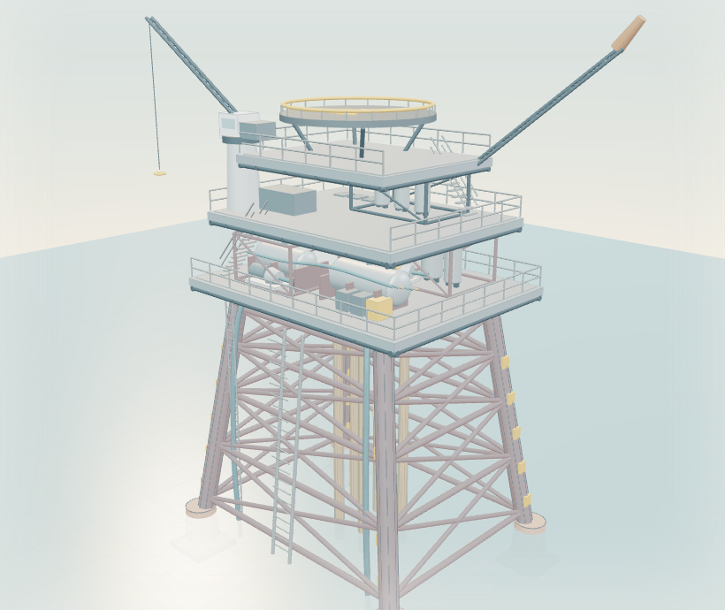

WebGL 3D · engineering model · sanitised
Drag to orbit · scroll or pinch to zoom · select a domain · double-click to focus

Static asset viewInteractive 3D loads when the viewer enters the screen.
Initialising engineering model
Active modelOffshore platform
View